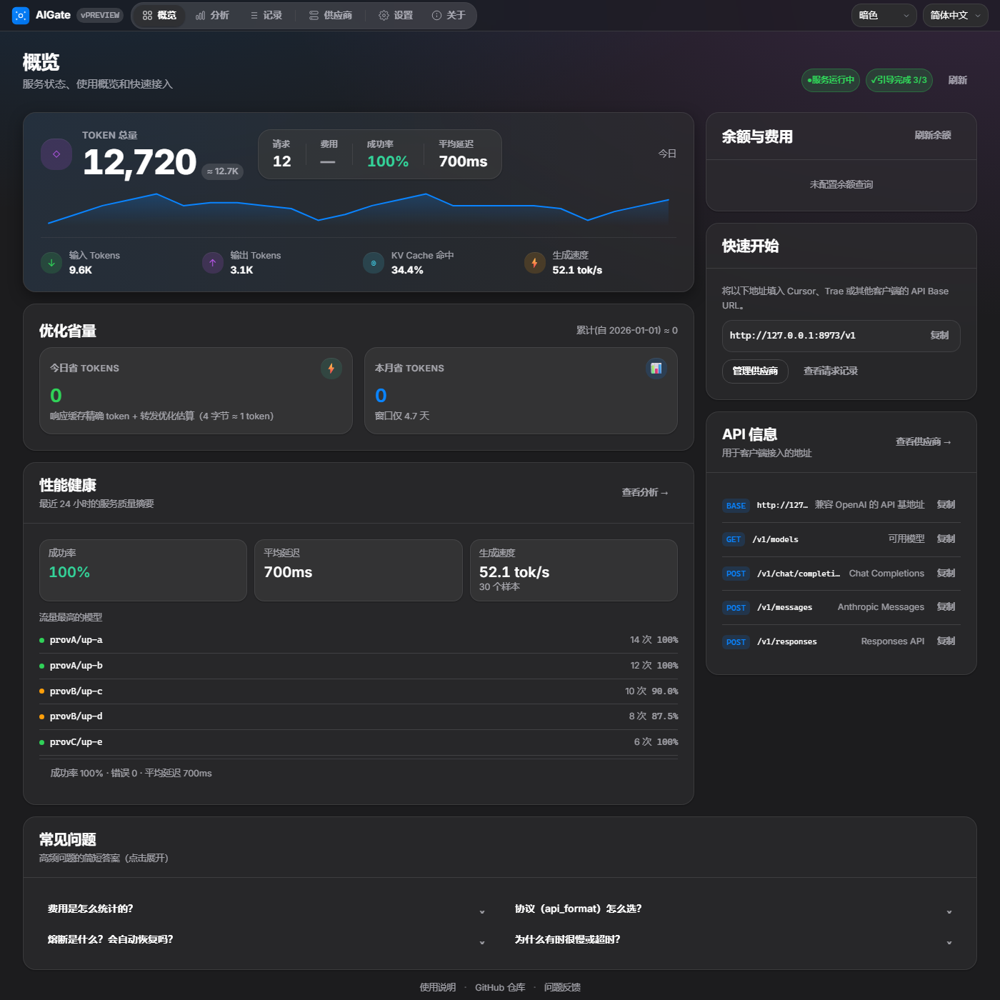
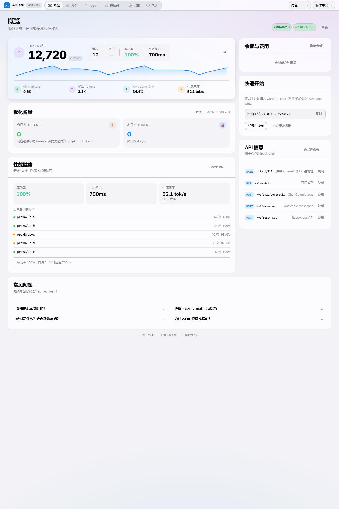
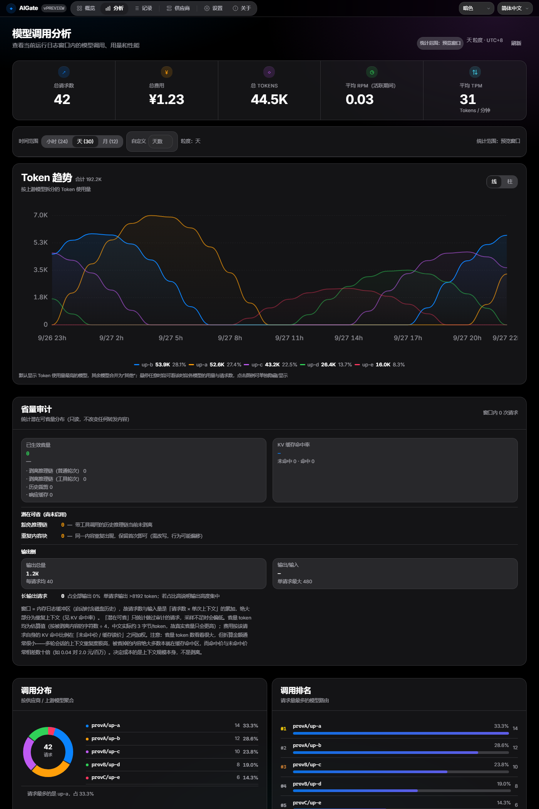
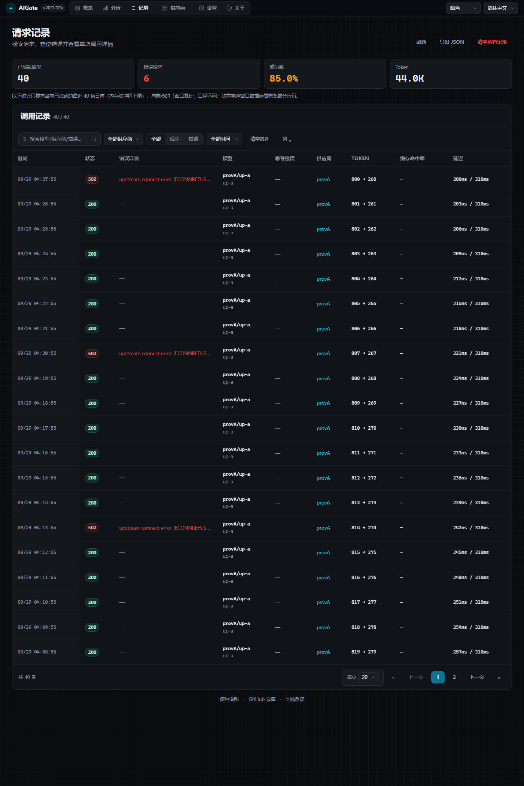
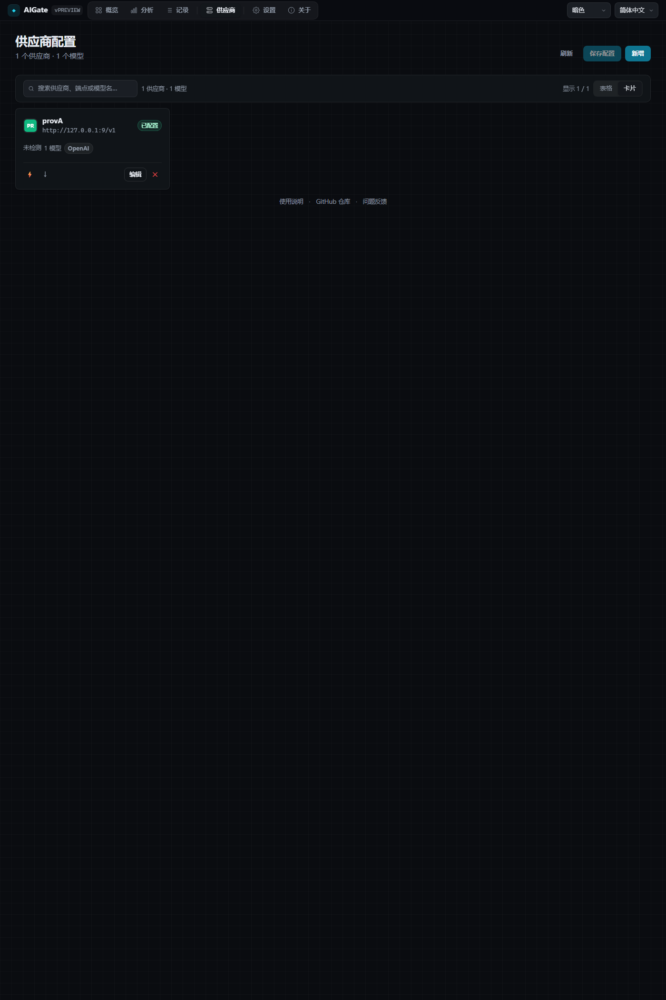
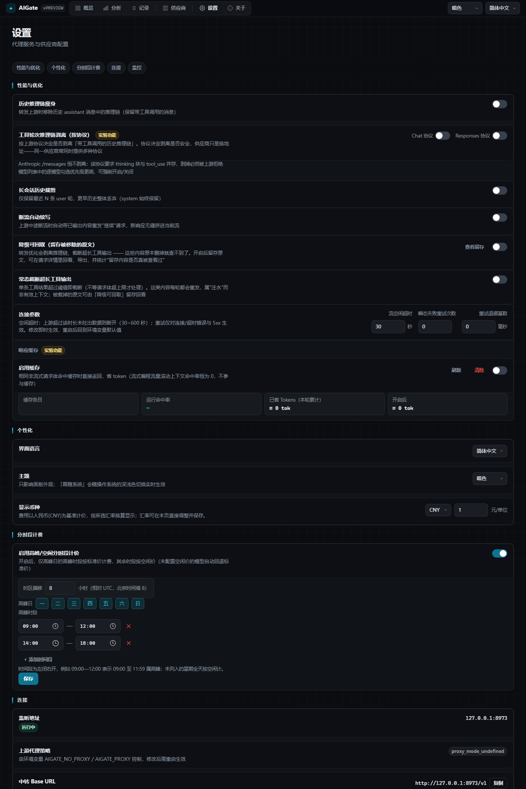

输入是输出的 380 倍
实测 5000 次请求：输入 16.84 亿 tokens，输出仅 444 万。大头从来不是「模型想了多久」，而是「每次重发了多少历史」。
把重复的上下文，
不再重复传一遍
一个地址接入所有编程工具，一个面板管住所有模型供应商。本地运行、单文件交付、零外部依赖。
先用数据看清请求体的结构 —— 这决定了该优化什么。
实测 5000 次请求：输入 16.84 亿 tokens，输出仅 444 万。大头从来不是「模型想了多久」，而是「每次重发了多少历史」。
也就是说：这些内容本来就在被反复重发。优化方向不是少发请求，而是别把重复内容再传一遍。
客户端只告诉你发了多少，不告诉你请求体里什么在重复；换一个供应商，一切又从零开始猜。
OpenAI / Anthropic / Responses 三种协议并存，每个客户端单独配 base_url 与密钥。
第一目标：不破坏上游缓存，同时剥掉真正冗余的部分。
末轮：客户端发出 11,513 B → 不剥离时上游收 11,510 B，剥离后只收 3,210 B（省 8,300 B，72%）。差值逐轮扩大（第 1 轮 −830 B → 第 10 轮 −8,300 B）：历史越长，重复搬运越多。
p90 省量达 357,390 —— 不是省零头；91% 的请求输入 ≥10 万 tokens。
带 tool_calls 的轮次 97.5% · 普通 assistant 2.5%
大头在多工具调用的轮次 —— 而这一层默认仅在 chat 协议开启。省量最大的 20% 请求贡献了 51% 的省量总量。
省下的 token 是实在的：不论上游怎么变，少发的 tokens 就不必再传输一遍。这也是为什么面板把省量按 token 逐项记账 —— 剥离 / 裁剪 / 缓存三类分开，看得见每一项省了多少。
以省量为主线，其余三项都是为它服务。
剥离推理链、历史裁剪、响应缓存 —— 且不破坏上游 KV 缓存。
客户端入口即意图；命中直传，字段不被往返翻译。
中转 ID 与上游真名解耦；同名模型跨供应商各自成路由。
省量逐项可见；熔断、退避重试、超时与体积上限。
客户端打哪个入口，就用哪个协议转发 —— 上游本来就支持就直传，不支持才转换。
| 客户端入口 | 网关行为 | 发往上游 |
|---|---|---|
/v1/chat/completions | 命中即直传 | /chat/completions |
/v1/messages | 命中即直传 | /messages |
/v1/responses | 命中即直传 | /responses |
让配置者逐个模型勾选支持什么协议 —— 真实配置里 652 个模型无一勾选，功能等于不存在。
按模型名推断（claude-* → anthropic）会错：同名模型跨服务方协议不同，claude-opus-4-8 在官方走 anthropic、在转售商走 openai。
没有任何证据说上游不支持 → 尊重客户端的选择。宁可让上游回一个诚实的错误，也不要静默换协议（后者会掩盖真实失败点）。
「直传」= 请求体逐字节保真：thinking 块与 signature、reasoning item 都不会被往返翻译掉。反之，转换必有代价 —— 这也是为什么 responses 直通路径的省量恒为 0（不经过剥离）。
剥离是有损且不可逆的 —— 所以边界要靠判据划，不能一刀切。
tool_calls 常常是配对关系：要求二者并存时，剥了就得到 400 —— 省下的 token 还不够赔一次失败重试。tool_calls 的走协议开关；Anthropic 恒不剥
anthropic_mode 那条优先于模型级开关 —— 宁可少省，也不能因为误勾而让请求必挂。claude-opus-4-8 在官方走 anthropic、在转售商走 openai —— 按供应商开关必然误判。| 情形 | 判定 | 说明 |
|---|---|---|
| Anthropic 协议 | 绝不剥 | thinking 块必须连签名回传，剥了上游必回 400。这条优先于模型级开关 —— 宁可少省，也不能造出必然失败的请求。 |
| chat 协议 · 普通 assistant | 剥 | 默认开启。这是省量的基本盘。 |
| chat 协议 · 带 tool_calls | 剥 | 默认开启（实测安全）—— 这也是省量的大头（97.5%）。 |
| Responses 协议 · reasoning item | 可选 | 与相邻 function_call 的配对关系未经实测，剥掉可能因序列不合法而 400 —— 交用户在真实上游试开。 |
| 响应缓存 / 历史裁剪 | 可选 | 裁剪默认 0 = 关（优先保上下文）；缓存只对非流式生效。 |
首帧即正确，不会先闪一下暗色；主题在顶栏随时切换。启动后访问 http://127.0.0.1:8787/admin。






| 页面 | 内容 |
|---|---|
| 概览 | 统计卡片（请求 / Token / 费用 / 成功率 / 缓存命中率 / 生成速度）+ 模型用量排名 + 占比环 + Token 趋势图 |
| 分析 | 五张 KPI 卡 + Token 趋势图（悬停十字线 + 数值浮层）+ 省量审计 + 调用分布 + 调用排名 + 模型明细 + 供应商性能 + 余额查询 |
| 记录 | 请求流水，支持分页、检索、单条详情与 JSON 导出 |
| 供应商 | 供应商列表与编辑抽屉；熔断状态与「重置熔断」也在供应商卡片上 |
| 设置 | 性能与优化、响应缓存（实验功能）、个性化、分时段计费、连接与监控 |
| 关于 | 版本与构建信息、可折叠「更新日志」区块 |
Token 数据来源于上游响应中的 usage 字段；若上游未返回，AIGate 按可见文本估算并在界面上标记为估算值（≈ 前缀）—— 不把估算当实测展示。
为了部署简单，刻意把技术面做窄：单个可执行文件，无需 Node，也不需要静态文件目录。
cargo build --release（Rust 1.75+）AIGate.exe，首次启动自动生成 providers.json 与 .env；浏览器打开面板完成初始化http://127.0.0.1:8787/v1，API Key 填任意值，模型 ID 用 providers.json 里的中转 ID{
"providers": [
{
"name": "deepseek",
"endpoint": "https://api.deepseek.com/v1/chat/completions",
"api_key_env": "DEEPSEEK_API_KEY",
"models": {
"deepseek-v4-flash-DS": {
"upstream_model": "deepseek-v4-flash",
"reasoning_effort": "max"
}
}
}
]
}PORT=8787
DEEPSEEK_API_KEY= # 变量名须与 api_key_env 一致
STRIP_HISTORY_REASONING=1 # 历史推理链瘦身
STRIP_TOOLCALL_ON_CHAT=1 # Chat 协议下剥离工具轮次
STRIP_TOOLCALL_ON_RESPONSES=0
MAX_HISTORY_TURNS=0 # 0 = 不裁剪
AIGATE_ADMIN_TOKEN= # 留空则不鉴权编辑 providers.json 后无需重启 —— 检测到文件变化会自动重载路由表。密钥只经环境变量注入，不写入代码或配置文件。
三个入口协议，一个模型列表，一个健康检查。
| 方法 | 路径 | 说明 |
|---|---|---|
| POST | /v1/chat/completions | OpenAI 兼容，支持流式（SSE）与非流式 |
| POST | /v1/messages | Anthropic Claude 格式入口，自动双向转换；该协议下不剥离推理链 |
| POST | /v1/responses | OpenAI Responses 入口；上游同为 Responses 时原生直通，SSE 字节级透传 |
| GET | /v1/models | 返回可用模型列表，列表项即模型中转 ID |
| GET | /health | 健康检查，返回 ok |
路由采用精确匹配：客户端传的模型 ID 必须与 models 的 key 完全一致。不要在多个供应商下使用同一个中转 ID —— 路由表按 ID 索引，后配置者会静默覆盖前者。
来自 README 的实战问答。
检查 target/release/ 目录下是否有 providers.json 和 .env。首次启动会自动生成，如权限不足可手动创建空文件。更详细的错误信息会通过 Windows 消息框显示。
≈ 前缀带 ≈ 表示该条请求上游未返回 usage，AIGate 按可见文本估算（中文实际约 3 字节/token，估算偏保守），并标记为估算值而非实测。若大量请求都是估算，通常是上游不支持 usage 字段。
客户端传的模型 ID 不在 models 映射表中。检查 ID 是否完全匹配（含大小写、斜杠与供应商前缀）。可在面板「供应商」页或 GET /v1/models 查看可用 ID。
修改 .env 中的 PORT 变量，或设置系统环境变量 PORT。
① 在 providers.json 的 providers 数组中添加新条目；② 在 .env 中添加对应的 API Key 环境变量；③ 保存后自动生效（无需重启）。